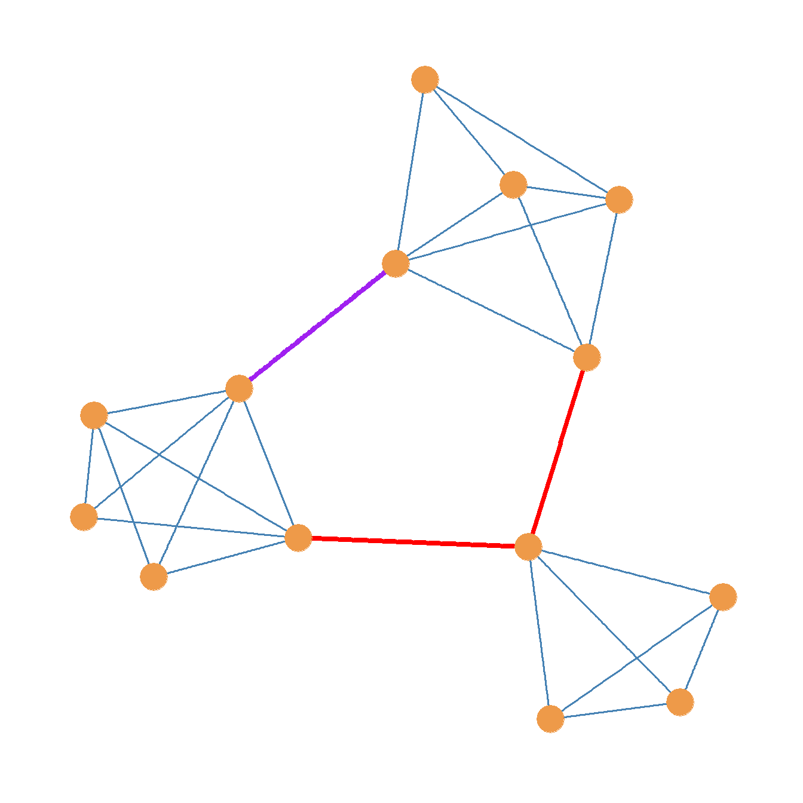
8 Graph Connectivity
8.1 Connected and Disconnected Graphs
Look at Figure 7.1 again. Are there any disconnected pairs of nodes in the graph? The answer is no. If you pick any pair of nodes, they are either directly connected, or indirectly connected to one another via a path of some length. So how can we get two nodes to be disconnected in a simple undirected graph? The answer is that there has to be some kind of “gap” splitting the graph into two or more pieces, so that some set of nodes can no longer reach some of the other ones.
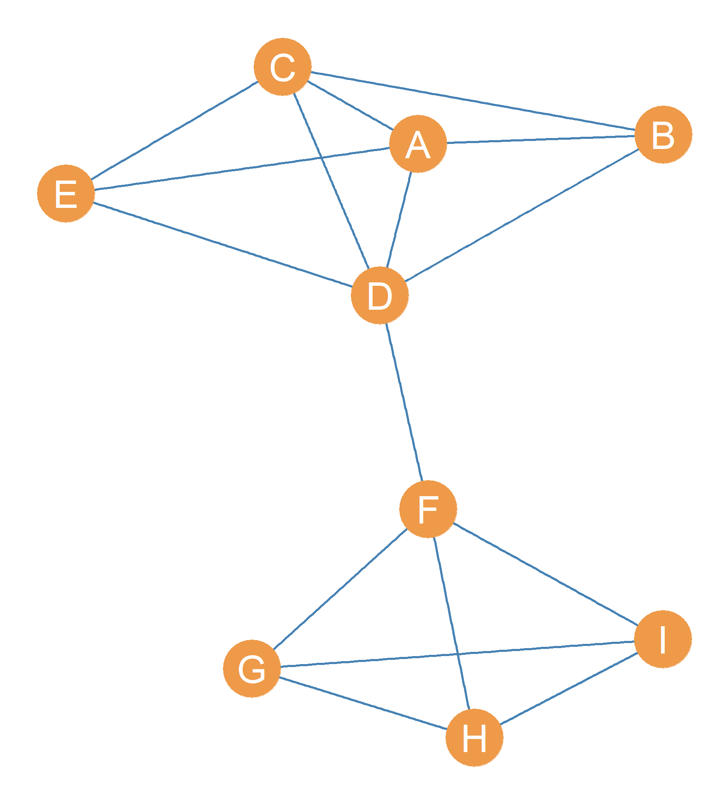
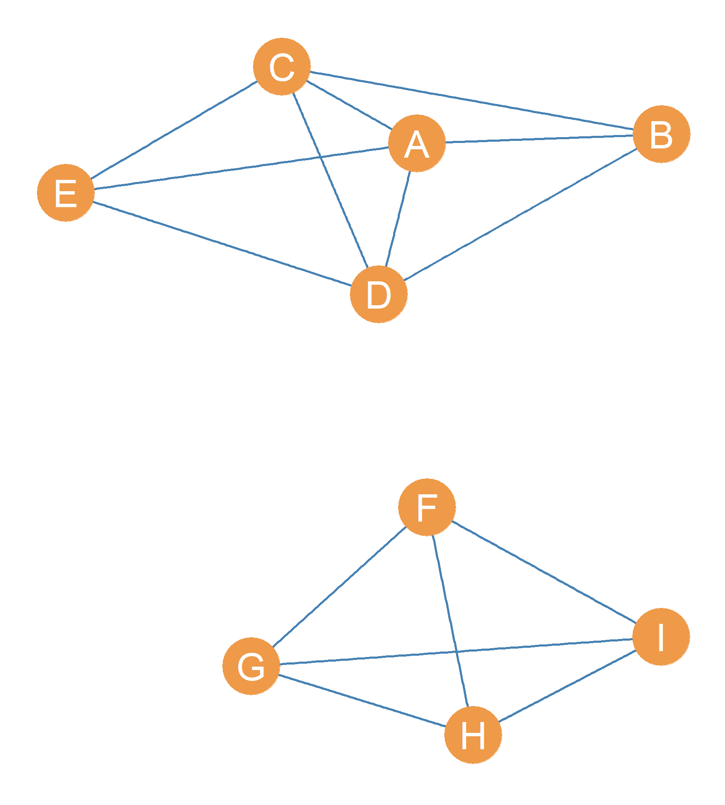
For instance, if you compare the undirected graphs Figure 8.1 (a) and Figure 8.1 (b) you can appreciate the difference between a connected graph and a disconnected graph. The difference between Figure 8.1 (a) and Figure 8.1 (b) is that the Figure 8.1 (b) graph is a subgraph of the Figure 8.1 (a) graph, in which the \(DF\) edge has been removed (an edge-deleted subgraph according to what we discussed in Chapter 4): \(G(b) = G(a) - DF\).
Removing the \(DF\) edge has resulted in \(G(b)\) being disconnected. There is no way we can trace a path connecting any of the vertices in the \(\{F, G, H, I\}\) subset with any of the vertices in the \(\{A, B, C, D, E\}\) subset. This is different from Figure 8.1 (a) where we can trace a finite path between any two vertices, even if it is very long. Thus, we can come up with a formal definition of graph connectivity:
A graph is connected if there exists a (finite) path between each pair of nodes.
A graph is disconnected if there does not exist a path connecting every pair of nodes
8.2 Components and the Giant Component
When a graph goes from connected (like Figure 8.1 (a)) to disconnected (like Figure 8.1 (b)) it is split into a number of subgraphs that are themselves connected.
For instance, in Figure 8.1 (b) the set nodes \(\{A, B, C, D, E\}\) form a connected subgraph of the larger disconnected graph. A connected subgraph that is part of a larger disconnected graph is called a component.
In Figure 8.1 (b) there are two components, one formed by the connected subgraph with node set \(\{A, B, C, D, E\}\), and the other formed by the connected subgraph with node set \(\{F, G, H, I\}\).
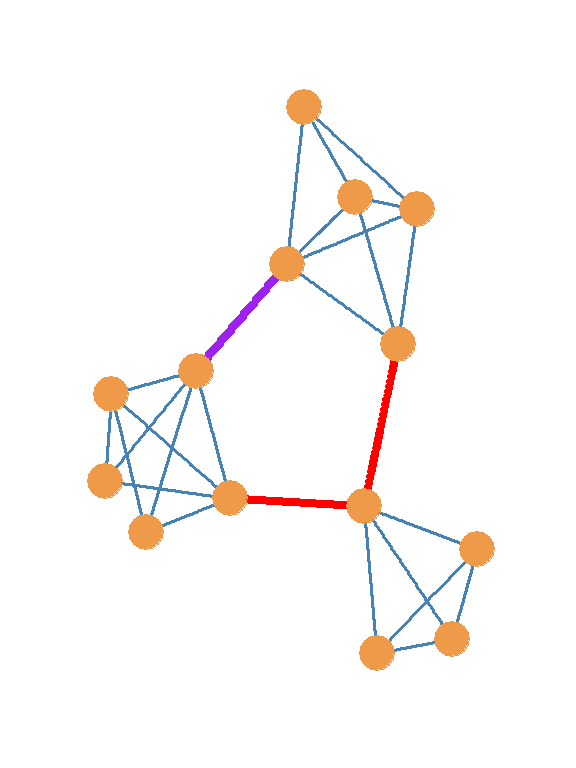
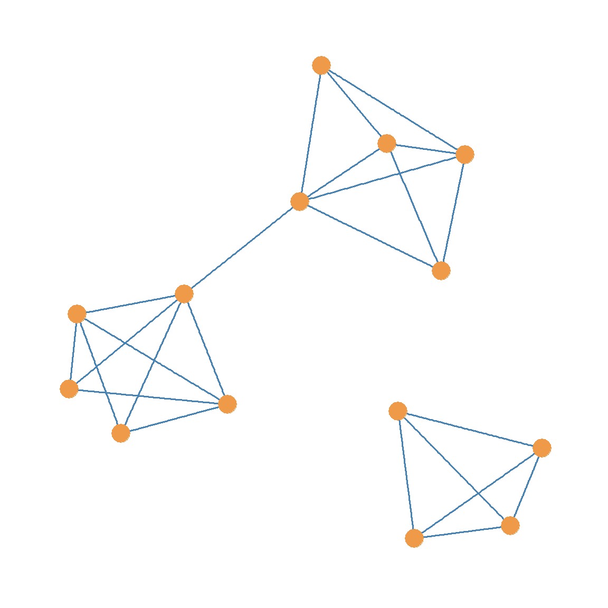
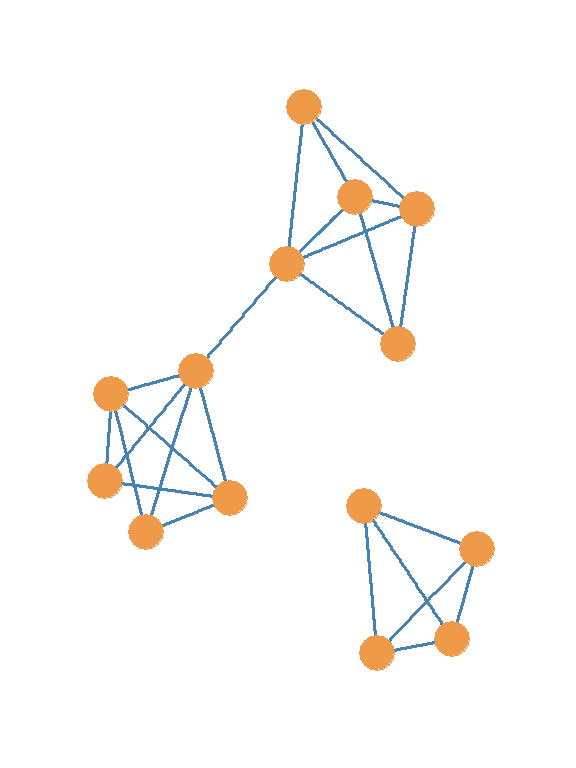
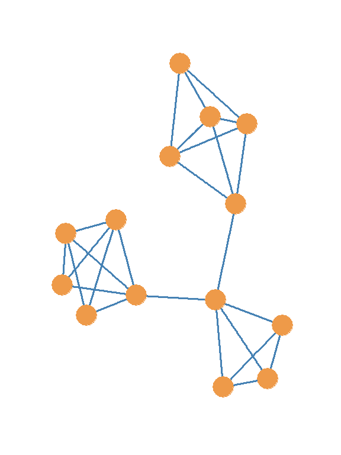
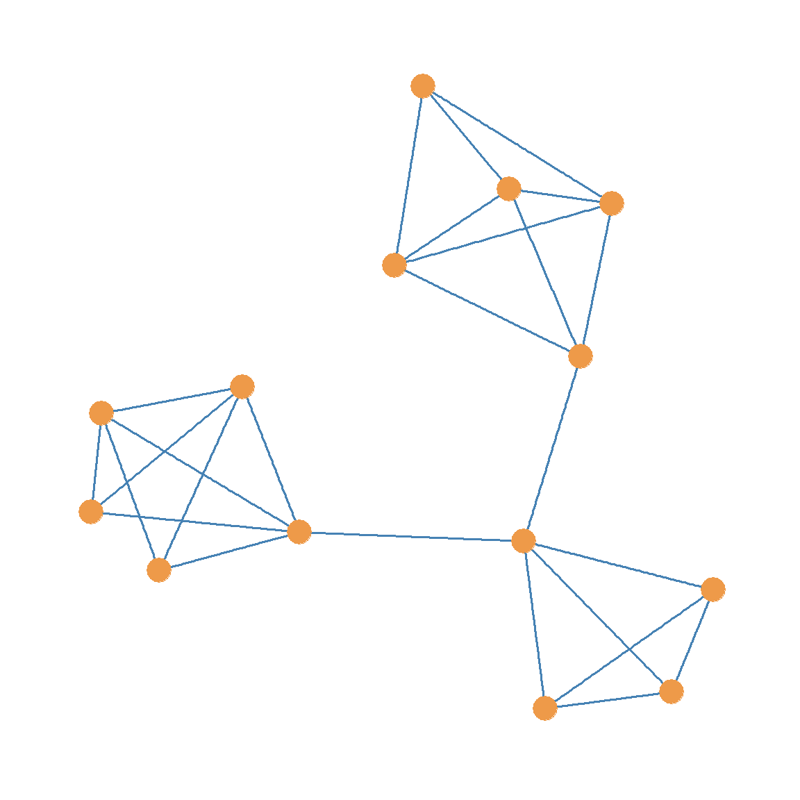
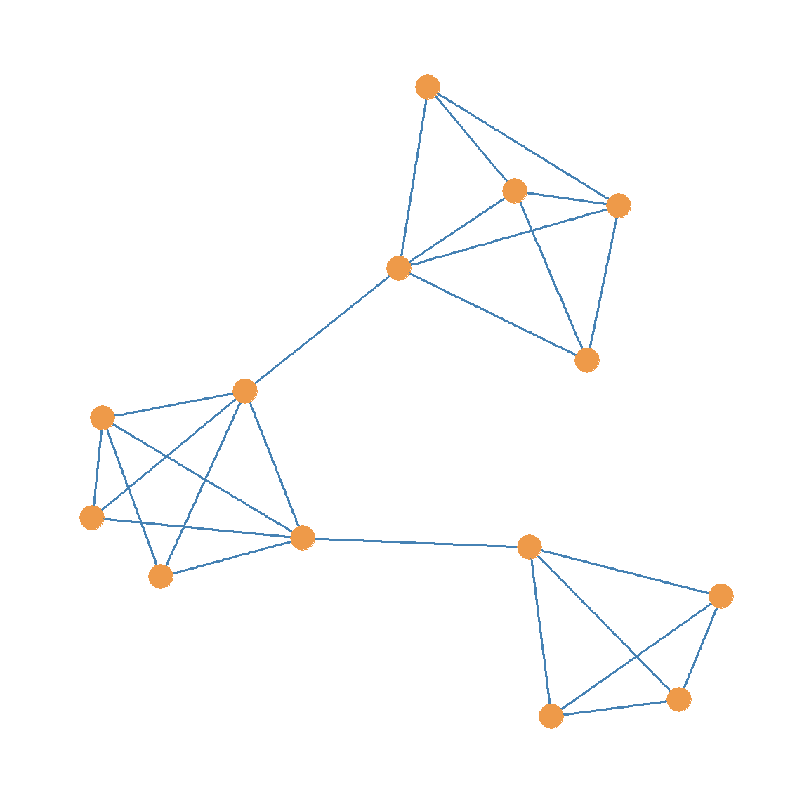
It is possible to split a graph into multiple components not just two. For instance, take a look at the unlabeled graph in Figure 8.2. If we were to generate a subgraph from Figure 8.2 by deleting the two red edges and the one purple edge, we would end up with the graph shown in Figure 8.3 (a). This graph is disconnected, and it features three separate components (connected subgraphs).
If were to delete just the red edges from Figure 8.2 and keep the purple edge, we would end up with the graph shown in Figure 8.3 (b). Like the Figure 8.3 (a), Figure 8.3 (b) is also disconnected, but it is split into two not three components.
Note that one of the connected components in the graphs shown in Figure 8.3 (b), Figure 8.3 (c), and Figure 8.3 (d) is way larger than the other one. For instance, the bigger connected component of graph Figure 8.3 (b) is of order ten, but the smaller component is only of order four.
When a disconnected graph is split into multiple components, the component containing the largest number of nodes (the connected subgraph of the highest order) is called the graph’s giant component.
8.3 Edge Connectivity
We went from the connected graph shown in Figure 8.2 to the disconnected graphs in Figure 8.3 by removing particular edges, like the red and purple ones in Figure 8.2.
These edges are clearly more important than the other colored blue in the graph, because they are responsible for keeping the whole graph together as a connected structure. Obviously this property of edges has a name in graph theory.
In a graph, an edge cutset is any set of edges whose removal results in a graph going from being connected to disconnected.
For instance, in Figure 8.2 the set of two red edges is a cutset of the graph \(G\) since deleting these edges would disconnect the graph as shown in Figure 8.3 (b). In the same way we can see that a subset that combines any one of the red edges with the purple edge is also a cutset of the graph in Figure 8.2, because removing any combination of these two links results in a disconnected graph, as shown in Figure 8.3 (c) and Figure 8.3 (d).
Generally, picking a bigger edge cutset will result in more disconnected components. For instance, selecting both the red edges and the purple edge—a cutset of cardinality three—as the cutset results in a graph with three disconnected components, as in Figure 8.3 (a).
A minimum edge cutset of a graph is any edge cutset that also happens to be of the smallest size (in terms of cardinality) among all the possible cutsets. The cardinality of the minimum edge cutset in the graph is called the graph’s edge connectivity, and it is written \(\lambda(G)\).
The graph in Figure 8.2 has edge-connectivity \(\lambda(G) = 2\) because we need to remove at least two edges to disconnected it. As we saw earlier these could be either the set the two red edges of any combination featuring one of the red ones with the purple one.
When a graph has edge-connectivity larger than one, like Figure 8.2, it means that we could remove any one edge and the graph would still be connected. For instance, looking at Figure 8.2, if we were to remove just the purple edge, the graph would still be connected, and it would look like Figure 8.3 (e), which is a connected graph.
The same would happen if we removed just one of the red edges from Figure 8.2. If were to do that, we would end up with the graph shown in Figure 8.3 (f), which is still a connected graph.
8.3.1 Bridges
As you might imagine, the smallest edge connectivity a connected graph can have is \(\lambda(G) = 1\). A graph with edge-connectivity equal to one has a special edge called a bridge. This is the single edge whose removal disconnects a graph with edge-connectivity equal to one.
For instance, in Figure 8.1 (a) the \(DF\) edge is a bridge. When a graph is like the one shown in Figure 8.1 (a) and has a bridge (like \(DF\)), this edge has two interesting properties (Buckley and Harary 1990, 17).
- First, if an edge is a bridge in graph \(G\), then that edge does not lie on any cycle of \(G\) (as defined in Chapter 7). That means that \(DF\) in Figure 8.1 (a) does not lie on any cycle of \(G\).
- Second, if an edge is a bridge, then there is at least one pair of nodes i and j such that the bridge is an edge on every path linking i and j. In Figure 8.1 (a), clearly condition (2) is the case for every node in the subset \(\{F, G, H, I\}\) relative to nodes in the subset \(\{A, B, C, D, E\}\). Every path linking nodes in the first subset to nodes in the second subset has to include the bridge \(DF\).
8.4 Node Connectivity
As you recall from Chapter 4, we can create subgraphs by removing either edges or nodes. In the same way, we can take a graph from being connected by removing either edges or nodes. In Section 8.3 we considered the case of removing edges to disconnect a graph. Here, we consider the case of removing nodes.
In a graph, a node cutset is any set of nodes whose removal results in a graph going from being connected to disconnected.
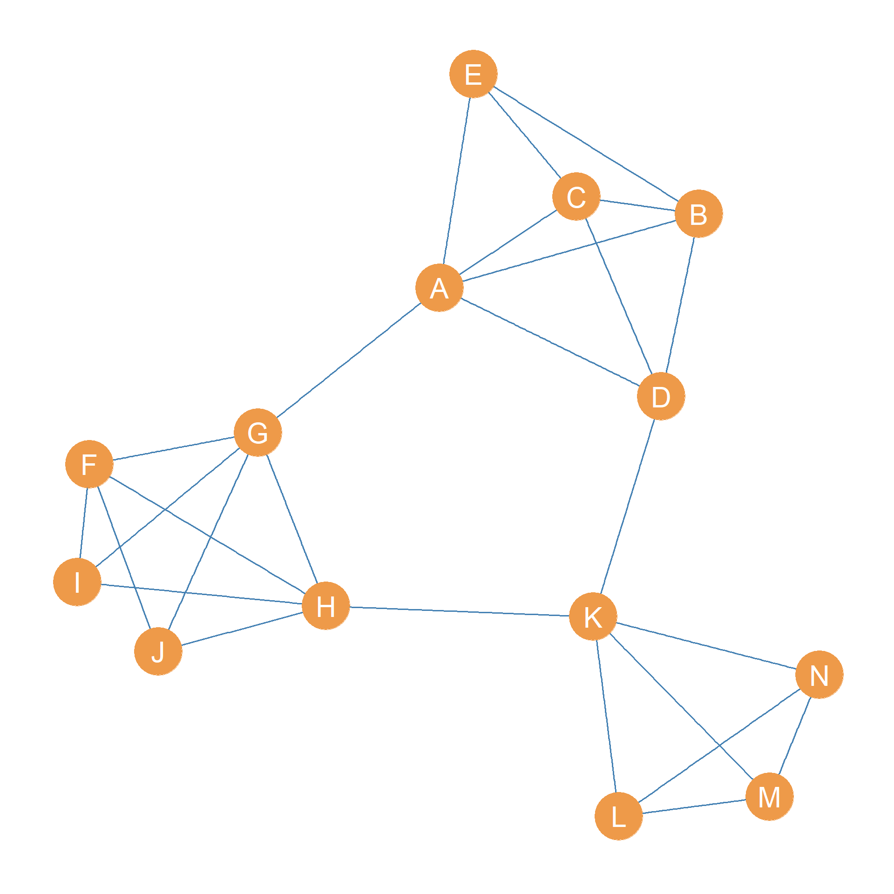
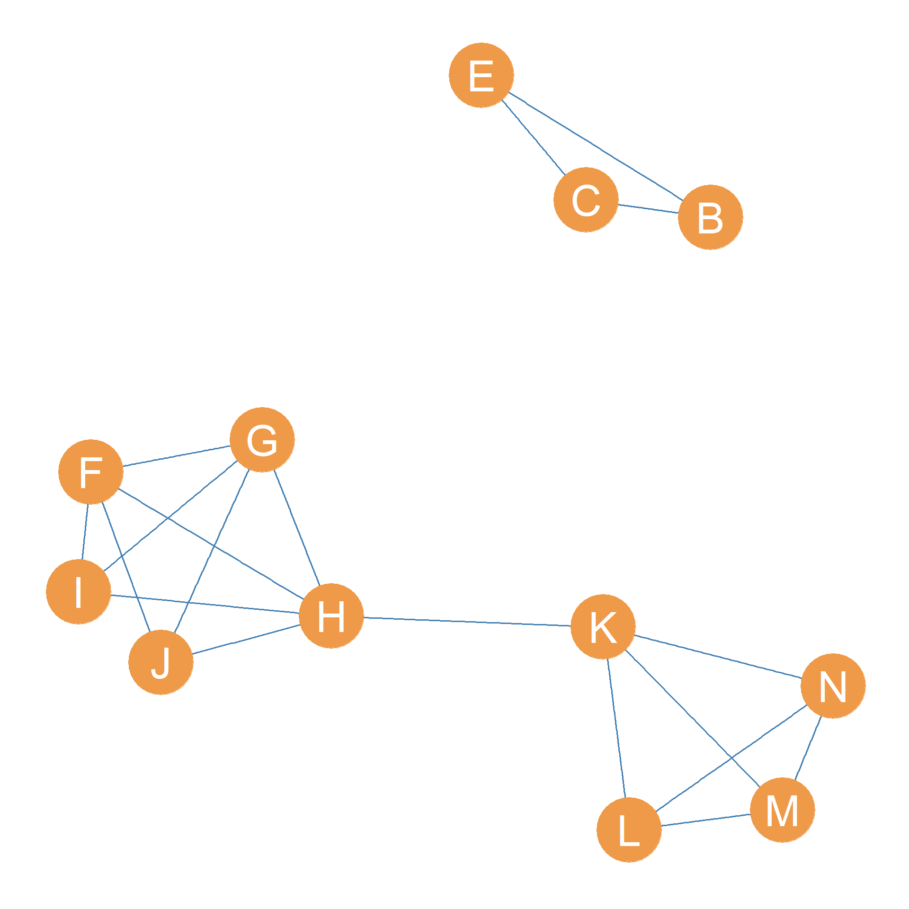
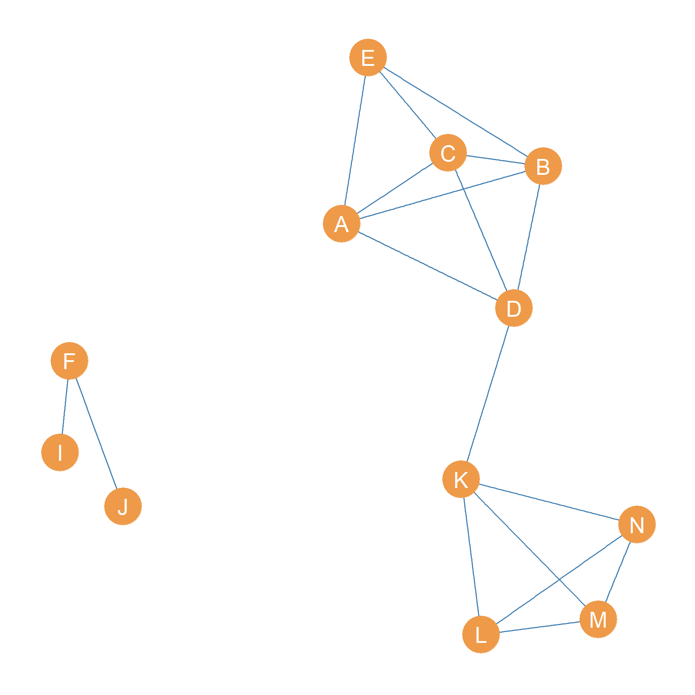
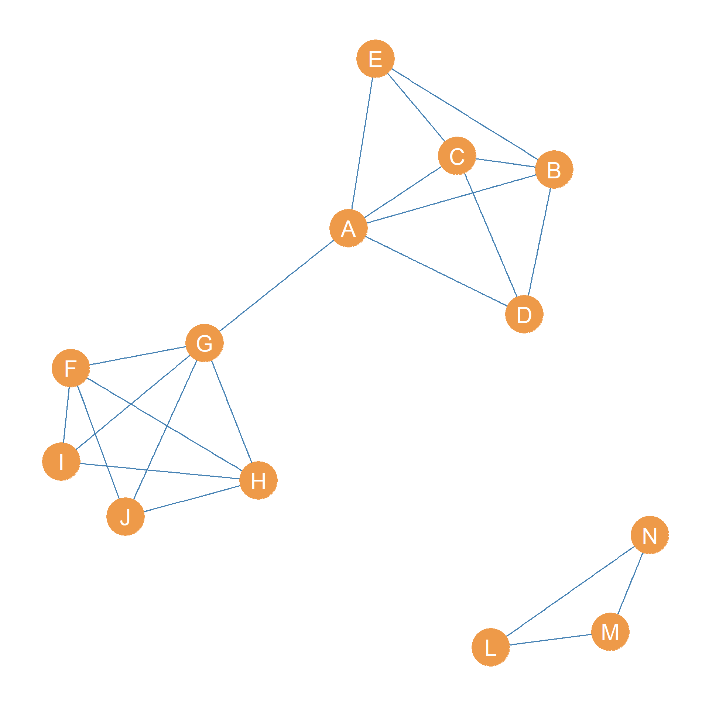
Figure 8.4 (a) shows a graph that is the same as Figure 8.3, except that the nodes are labeled. In that graph, the set of nodes \(\{A, D\}\) is a cutset of the graph \(G\) since deleting these nodes disconnects the graph, as shown by the resulting node-deleted subgraph shown in Figure 8.4 (b). This graph is now disconnected, featuring a nine-node giant component and a smaller three-node component containing nodes \(\{B, C, E\}\)
In the same way we can see that the set of nodes \(\{G, H\}\) is also a cutset of the graph, because removing these nodes would separate \(\{F, I, J\}\) from the rest of their friends, creating a graph with two separate components, as shown in Figure 8.4 (c).
Interestingly, the set formed by the single node \(K\) is also a cutset of the graph. As shown in Figure 8.4 (d), removing this one node disconnects the graph, separating \(\{L, M, N\}\) from the rest.
A minimum node cutset of a graph is any node cutset that also happens to be of the smallest size (in terms of cardinality). The cardinality of the minimum node cutset in the graph is called the graph’s node connectivity, and it is written \(\kappa(G)\).
The graph in Figure 8.4 (a) has node-connectivity (\(\kappa(G) = 1\)) because, as we have seen, all we need to do is remove \(K\) to disconnect it.
8.4.1 Articulation Nodes
A single node whose removal disconnects a graph is called an articulation node of the graph. The articulation node is the node equivalent, therefore, of what a bridge is for edges. A single actor upon whom the entire connectivity of the network depends.
It follows from this that if a graph has node-connectivity larger than one, it means that we could remove any one node and the graph would still be connected. The larger the graph connectivity of a graph, then the larger is the structural cohesion of the underlying social network represented by the graph (Moody and White 2003).
8.5 Advanced: Local Bridges
In a classic paper on “The Strength of Weak Ties,” Mark Granovetter (1973) developed the concept of a local bridge. Recall from section Section 8.3.1, that a bridge is an edge that if removed would completely disconnect the graph.
Another way of thinking about this is that a bridge is an edge that if removed would increase the length of the shortest paths between two sets of nodes from a particular number to infinity since, in a disconnected graph, the length of the path between nodes that cannot reach one another is indeed infinity! (\(\infty\)).
There is another way of thinking of bridges in the context of shortest paths and this is with respect to what happens to the indirect connectivity between particular pairs of nodes in the graph when a specific edge is removed. Clearly, every time we remove an edge, this has to affect the indirect connectivity between pair of nodes, by for instance, increasing their geodesic distance (the length of the shortest path linking them).
So even if a graph remains connected after removing an edge (because its edge-connectivity is larger than one), removing an edge can affect how close two nodes in the network are. That is what the concept of a local bridge is intended to capture.
Formally, a local bridge is an edge that if removed from the graph, would increase the length of the shortest path between a particular pair of nodes to a number that is higher than their current one but less than infinity. This number is called the degree of the local bridge in question. Because a local bridge is always defined with respect to a particular pair of nodes, it is a triplet, involving two nodes i and j and one edge uv.
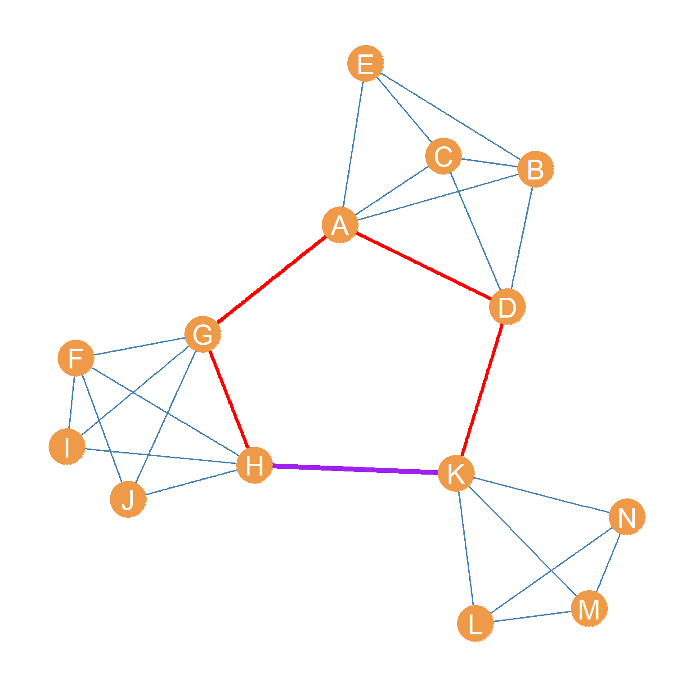
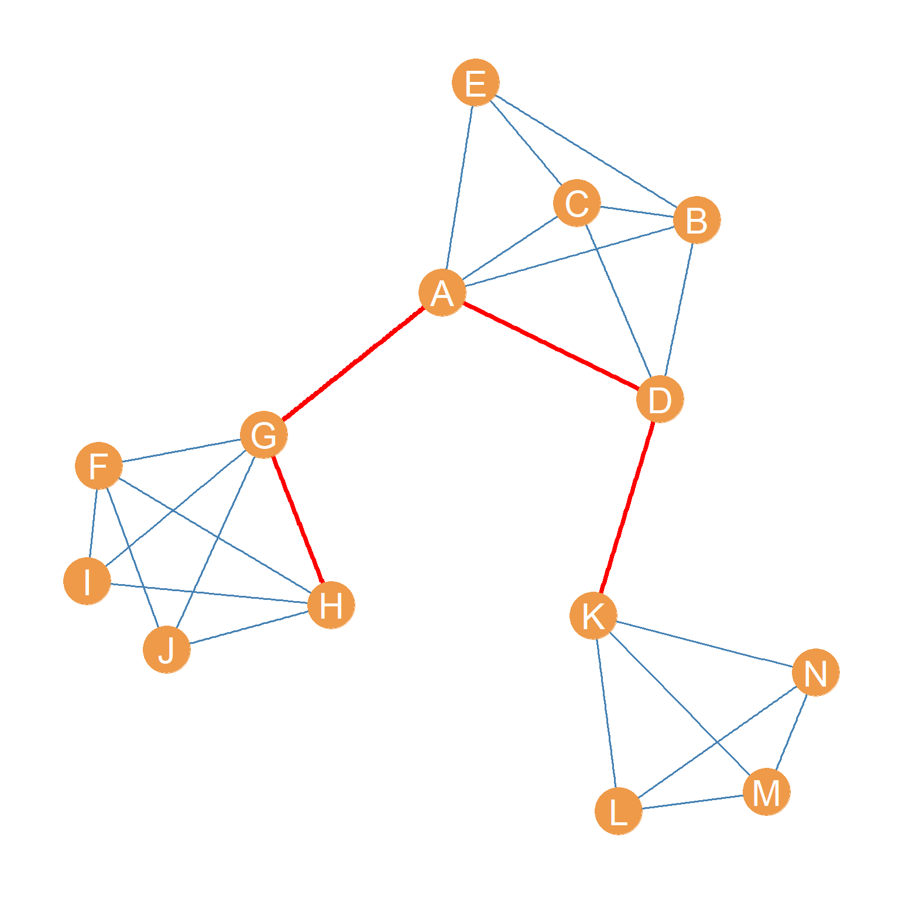
For instance, in Figure 8.5 (a), with respect to nodes \(A\) and \(H\), the edge \(HK\) (pictured in purple) is a local bridge of degree 4. The reason for that is that, as shown in Figure 8.5 (b), when the edge \(HK\) is removed from the graph, the shortest path_ between nodes \(H\) and \(K\) increases from \(l_{HK} =1\) (\(H\) and \(K\) are adjacent in Figure 8.5 (a)) to \(l_{HK} = 4\), as given by the edge sequence \(\{GH, AG, AD, DK\}\) (pictured in red).
Note that from the perspective of nodes \(D\) and \(H\), the purple \(HK\) edge is a local bridge of degree three, because \(l_{DH} = 2\) in Figure 8.5 (a) and \(l_{DH} = 3\) when the edge \(HK\) is removed from the graph in Figure 8.5 (b).
References
Buckley, Fred, and Frank Harary. 1990. Distance in Graphs. Addison-Wesley.
Granovetter, Mark S. 1973. “The Strength of Weak Ties.” American Journal of Sociology 78 (6): 1360–80.
Moody, James, and Douglas R White. 2003. “Structural Cohesion and Embeddedness: A Hierarchical Concept of Social Groups.” American Sociological Review, 103–27.